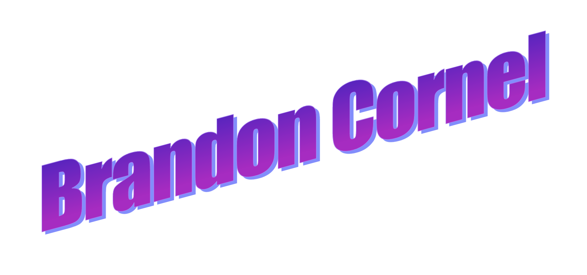
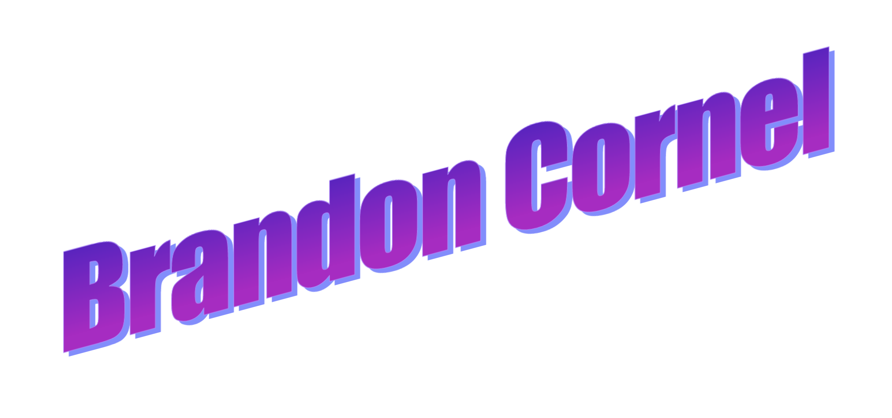

Jack of all trades, master of none
About
-
- Software Engineer from Brooklyn, NY
- - Minor in Computer Science
- - Concentration in Artificial Intelligence
- B.S in Software Engineering @ Rochester Institute of Technology
- Backend Engineer for SapientRazorfish
- Web Developer for perch'n
Projects
- Toilet Finder
- Potluck
- Pornhub Data Mining
- Luggage Organizer
- Can I Park Here?
Experience
-
- Thomson Reuters
- - Jan 2017 - Aug 2017
- - Software Engineer Co-op
- -
Test Automation Engineer on the Westlaw Public Records team.
Worked on an agile team developing functional regression
tests and refactoring the team’s test suite. All tests were
built using Selenium. Manually tested new features and bug fixes.
-
- Fidelity Investments
- - May 2016 - Aug 2016
- - Software Engineer Intern
- -
Quality Assurance Engineer intern on the Electronic Channel Application
Team under the Performance Team. Developed tests for both SOAP and
REST web services through ReadyAPI. Scripts were developed using
Groovy/Java. Also developed a tool to help testers control and
view VMs.
-
- Paychex
- - June 2015 - Jan 2016
- - Software Engineer Co-op
- -
Test Automation Engineer developing tests for Core Advanced. Worked
on an agile team developing functional tests using their framework.
Debugged their automation framework using VB.NET. Manually tested
code changes included in emergency deployment.
Hobbies
- Rock Climbing
- Cooking
- DJing
- Reading
- Record Collecting
- Yoyoing
- Drawing(or atleast trying)